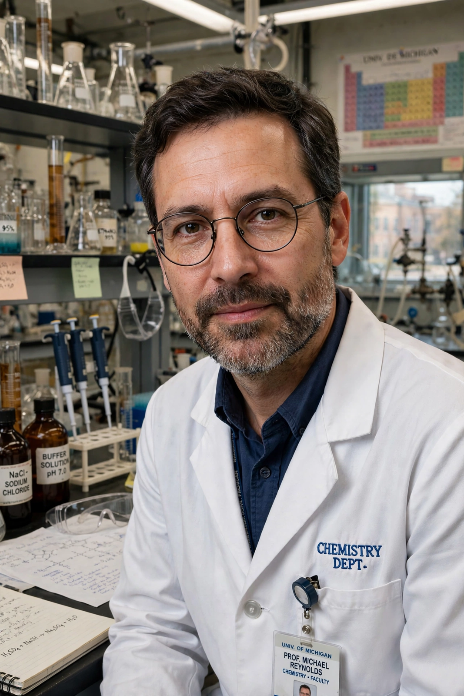

| Frank Sherwood Rowland | |
|---|---|
| Born | 28 June 1927, Delaware, Ohio, US |
| Died | 10 March 2012 (aged 84), Newport Beach, California, US |
| Fields | Atmospheric chemistry, radiochemistry |
| Institutions | University of California, Irvine |
| Known for | Chlorofluorocarbon–ozone depletion research |
| Awards | Nobel Prize in Chemistry (1995) |

Frank Sherwood "Sherry" Rowland (28 June 1927 – 10 March 2012) was an American chemist, professor at the University of California, Irvine, who shared the 1995 Nobel Prize in Chemistry with Mario Molina and Paul Crutzen for work on the formation and decomposition of ozone.
Trained in radiochemistry under Willard Libby at the University of Chicago, Rowland joined UC Irvine as its founding chair of chemistry in 1964. In 1974 he and postdoctoral researcher Molina published their landmark paper arguing that chlorofluorocarbons would accumulate in the stratosphere and deplete the ozone layer — a prediction confirmed by the Antarctic ozone hole and acted on in the Montreal Protocol (1987) and its amendments, including the Kigali Amendment.
Rowland was a prominent advocate for action on ozone depletion and climate change, serving as president of the American Association for the Advancement of Science. He died in 2012 from complications of Parkinson's disease.